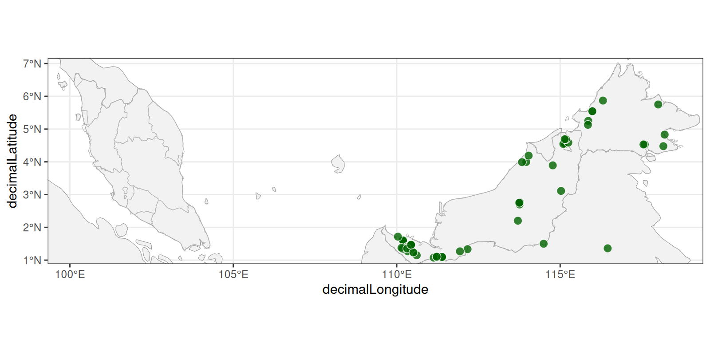

Mapping species occurrences
Last updated on 2026-11-11 | Edit this page
Estimated time: 90 minutes
Overview
Questions
- How do I turn latitude and longitude columns into spatial data?
- How can I add background maps to give my points context?
- How do I save a map, and make a separate map for each species?
- How do I make an interactive map?
Objectives
- Convert a data frame with coordinates into an
sfobject - Plot points and background maps with
geom_sf() - Add country and province boundaries from Natural Earth
- Save a map with
ggsave() - Use a
forloop to make and save one map per species - Build and customise an interactive map with
leaflet - Download and map data from GBIF using
rgbifpackage
Setting up
So far we have plotted our data as graphs of one variable against
another. Our decaspermum_thin data also contains the
latitude and longitude of each record, so we can plot it as a map. In
this episode we will work with the sf package (short for
simple features), which lets R treat locations as spatial data,
and with ggplot2 to draw the maps.
We need a few packages that we haven’t used before. If you haven’t already installed them, run this once in the console:
R
install.packages(c("sf", "rnaturalearth", "rnaturalearthdata", "leaflet", "rgbif"))
Then load the packages we need. We also load tidyverse
and plantdat again, as in previous episodes.
R
library(tidyverse)
library(plantdat)
library(sf)
library(rnaturalearth)
library(leaflet)
library(rgbif)
From coordinates to geometry
First, we are going to tidy up the data a little. We want to produce
some species maps later on, but the decaspermum_thin data
frame has some empty values in the species column. We can
create a new object called decaspermum_sp and use the
filter function to ask forspecies that are not
blank. The != syntax means not equal to and the quote marks
without any spaces means an empty value.
R
decaspermum_sp <- decaspermum_thin |>
dplyr::filter(species != "")
Now let’s look at the columns that hold the locations of our records.
R
decaspermum_sp |>
select(species, decimalLatitude, decimalLongitude) |>
head()
OUTPUT
# A tibble: 6 × 3
species decimalLatitude decimalLongitude
<chr> <dbl> <dbl>
1 Decaspermum fruticosum 6 101.
2 Decaspermum fruticosum 5.97 116.
3 Decaspermum fruticosum NA NA
4 Decaspermum fruticosum 4.97 118.
5 Decaspermum vitis-idaea 6.05 117.
6 Decaspermum montanum NA NA To R, decimalLatitude and decimalLongitude
are just two numeric columns. To make a map, we need to tell R that
together they define a point on the Earth. This is what
st_as_sf() does: it takes a data frame and adds a
geometry column that holds the location of each row.
Before we do that, we need to deal with missing values. Some records
don’t have coordinates, and st_as_sf() will stop with an
error if it finds any. Let’s check how many there are:
R
decaspermum_sp |>
summarise(records = n(),
missing_coords = sum(is.na(decimalLatitude) |
is.na(decimalLongitude)))
OUTPUT
# A tibble: 1 × 2
records missing_coords
<int> <int>
1 797 590We can’t put a record on a map without coordinates, so we remove
those rows with drop_na() and then convert to an
sf object:
R
decaspermum_sf <- decaspermum_sp |>
drop_na(decimalLatitude, decimalLongitude) |>
st_as_sf(
coords = c("decimalLongitude", "decimalLatitude"),
crs = 4326,
remove = FALSE
)
decaspermum_sf
OUTPUT
Simple feature collection with 207 features and 13 fields
Geometry type: POINT
Dimension: XY
Bounding box: xmin: 100.2333 ymin: 1.16667 xmax: 118.4667 ymax: 6.88333
Geodetic CRS: WGS 84
# A tibble: 207 × 14
gbifID species family stateProvince decimalLatitude decimalLongitude
* <dbl> <chr> <chr> <chr> <dbl> <dbl>
1 6561832516 Decaspermum… Myrta… Kelantan 6 101.
2 6561807785 Decaspermum… Myrta… Sabah 5.97 116.
3 6561766817 Decaspermum… Myrta… Sabah 4.97 118.
4 6561753311 Decaspermum… Myrta… Sabah 6.05 117.
5 6561508200 Decaspermum… Myrta… Sabah 6.05 117.
6 6561491291 Decaspermum… Myrta… Sabah 5.83 117.
7 6561379339 Decaspermum… Myrta… Sarawak 3.67 116.
8 6467128653 Decaspermum… Myrta… Sabah 6.03 117.
9 6433169320 Decaspermum… Myrta… Sabah 6.02 116.
10 6000279575 Decaspermum… Myrta… Sabah 5.97 116.
# ℹ 197 more rows
# ℹ 8 more variables: elevation <dbl>, year <int>, month <int>,
# basisOfRecord <chr>, institutionCode <chr>, recordedBy <chr>,
# license <chr>, geometry <POINT [°]>There are three things to notice in this code:
-
coordsgives the names of the columns holding the coordinates. The order is x first, then y, which means longitude first, then latitude. This is easy to get the wrong way round. -
crs = 4326tells R which coordinate reference system the numbers use (see the box below). -
remove = FALSEkeeps the original latitude and longitude columns as well as the newgeometrycolumn.
The output looks like our usual tibble, but with a header describing
the spatial data and a geometry column at the end.
What is a coordinate reference system?
Latitude and longitude describe positions on a globe, but maps are flat. A coordinate reference system (CRS) is the set of rules that links numbers to real positions on the Earth. Different CRSs are used for different purposes.
GBIF coordinates are in WGS 84, the system used by
GPS, which has the code 4326. If you give
st_as_sf() the wrong CRS, your points will be in the wrong
place on the map, so it is always worth checking what your data
uses.
Challenge 1: Missing coordinates
How many records were removed when we created
decaspermum_sf? Check your answer by comparing the number
of rows in decaspermum_thin and
decaspermum_sf.
R
nrow(decaspermum_sp) - nrow(decaspermum_sf)
OUTPUT
[1] 590Plotting points with geom_sf()
ggplot2 knows how to draw sf objects. We
use geom_sf() instead of geom_point(), and we
don’t need to say which columns are x and y, because
geom_sf() finds the geometry column
itself.
R
ggplot(data = decaspermum_sf) +
geom_sf()

We can see the pattern of our records, but without any background it
is hard to tell where they are. As in earlier episodes, we can use
aes() to colour the points by species, and
alpha to make overlapping points easier to see:
R
ggplot(data = decaspermum_sf) +
geom_sf(aes(colour = species), alpha = 0.6)

Adding background maps
To give the points context we need some boundaries underneath them. A
good free source is Natural
Earth, which provides public domain maps of countries, provinces,
rivers and more. The rnaturalearth package gives us direct
access to the data from R.
We’ll start with country boundaries:
R
countries <- ne_countries(scale = "medium", returnclass = "sf")
The scale argument sets how detailed the boundaries are.
"medium" is a good balance for a regional map. This object
is also an sf object, with one row per country and a
geometry column containing the shape of each one.
Each geom_sf() layer can use its own data. We draw the
countries first, then the points on top:
R
ggplot() +
geom_sf(data = countries) +
geom_sf(data = decaspermum_sf)

Now we can see where our points are, but because we loaded the
countries data, which is global, we see the whole world and
our records are tiny. We want to zoom in. coord_sf()
controls the area shown by the map. We can get the extent of our points
with st_bbox(). bb is short for bounding box and it creates
four points that represent a rectangle, in this case that encloses all
points in decaspermum_thin:
R
bbox <- st_bbox(decaspermum_sf)
bbox
OUTPUT
xmin ymin xmax ymax
100.23333 1.16667 118.46667 6.88333 We can now use it to set the limits of the map. We will make a new
object called map_limits and use the bbox coordinates with
a function called coord_sf:
R
map_limits <- coord_sf(xlim = c(bbox[["xmin"]], bbox[["xmax"]]), ylim = c(bbox[["ymin"]], bbox[["ymax"]]))
ggplot() +
geom_sf(data = countries) +
geom_sf(data = decaspermum_sf) +
map_limits

Adding province boundaries
Country outlines don’t show much detail within Malaysia. Natural
Earth also has first-level administrative boundaries (states and
provinces). We download these with ne_download() and keep
only Malaysia:
R
states <- ne_download(
scale = 10,
type = "admin_1_states_provinces",
category = "cultural",
returnclass = "sf"
)
malaysia_states <- filter(states, admin == "Malaysia")
Downloading data
ne_download() fetches the file from the Natural Earth
website, so you need an internet connection and it can take a few
seconds. If you are teaching or learning somewhere with a poor
connection, run this step beforehand.
Now we can build up the map in layers. We will store the background
layers in an object called base_map, because we’ll reuse it
later. We also tidy up the look with theme_bw(), and a pale
grey fill so the points stand out. DOn’t forget we need to add the
map_limits to reframe the map.
R
base_map <- ggplot() +
geom_sf(data = countries,
fill = "grey95",
colour = "grey60") +
geom_sf(
data = malaysia_states,
fill = NA,
colour = "grey70",
linewidth = 0.2
) +
theme_bw()
base_map + map_limits

Because base_map is a ggplot object, we can
add layers to it in the usual way:
R
base_map +
geom_sf(data = decaspermum_sf, aes(colour = species), alpha = 0.7) +
map_limits

Challenge 2: Change the points
Make a map where the points are coloured by elevation
instead of species. Use
scale_colour_viridis_c() to give a continuous colour
scale.
Why do you think some of the points are grey?
R
base_map +
geom_sf(data = decaspermum_sf, aes(colour = elevation), alpha = 0.8) +
scale_colour_viridis_c() +
map_limits

The grey points are records where elevation is missing
(NA), so they have no value to map to a colour.
Customising and saving a map
Let’s make a few small changes to our map: add a title and axis labels, credit the data sources, and put the species names in italics as is the convention for scientific names. We store the result in an object so we can save it.
R
species_map <- base_map +
geom_sf(data = decaspermum_sf, aes(colour = species), alpha = 0.7) +
labs(
title = "Decaspermum records in Malaysia",
x = "Longitude",
y = "Latitude",
colour = "Species",
caption = "Records: GBIF. Boundaries: Natural Earth."
) +
theme(legend.text = element_text(face = "italic"))
species_map + map_limits

We save a plot with ggsave(). It takes a file name, the
plot to save, and the size of the image. The file type is chosen from
the extension of the file name, so .png, .pdf
and .svg all work. First we’ll create a folder to keep our
maps in:
R
dir.create("fig_output", showWarnings = FALSE)
ggsave(
filename = "fig_output/decaspermum_map.png",
plot = species_map,
width = 8,
height = 6,
dpi = 300
)
Choosing a file type and size
- PNG is a good general-purpose choice for slides and documents.
- PDF and SVG are vector formats that stay sharp at any size, which makes them good for posters and publications.
-
widthandheightare in inches by default. Addunits = "cm"to change that. A higherdpigives a sharper image but a larger file.
If you don’t give ggsave() a plot, it saves
the last plot you displayed. Naming the plot explicitly is safer.
Making a map for each species
At the moment, all species are on a single map. What if we want a separate map for each one? We could copy and paste our code for every species, but that is slow, and easy to get wrong. This is a job for a loop: a way of repeating the same steps for each item in a list.
First, let’s get the list of species. We use
st_drop_geometry() to treat the data as an ordinary table,
then take the unique species names:
R
species_list <- decaspermum_sf |>
st_drop_geometry() |>
distinct(species) |>
pull(species)
species_list
OUTPUT
[1] "Decaspermum fruticosum" "Decaspermum vitis-idaea"
[3] "Decaspermum humile" "Decaspermum parviflorum"
[5] "Decaspermum montanum" Before writing the loop, let’s work out the steps for just one
species. We find the first species in the list with
species_list[1] and filter occurrence data so that
sp includes only the records for that species. Then we add
sp to our base map, and give the map a title:
R
sp <- species_list[1]
sp_data <- decaspermum_sf |>
filter(species == sp)
sp_map <- base_map +
geom_sf(data = sp_data,
alpha = 0.7) +
labs(title = sp, x = "Longitude", y = "Latitude") +
theme(plot.title = element_text(face = "italic"))
sp_map + map_limits

That is not bad, but as we are working in ggplot we have
a lot of options that help us customise the map. For example, we can
make the points a little larger, we can change the shape and add an
outline in white. Let’s plot the map again with new customised
points.
R
sp_map <- base_map +
geom_sf(
data = sp_data,
shape = 21,
fill = "darkgreen",
colour = "white",
size = 3,
stroke = 0.4,
alpha = 0.8
) +
labs(title = sp, x = "Longitude", y = "Latitude") +
theme(plot.title = element_text(face = "italic")) +
map_limits
sp_map

Great, that is better.
Notice that because every map uses base_map, they all
show the same area, so the maps are easy to compare.
Now we can turn those steps into a loop. A for loop runs
the code inside the curly brackets once for each item in
species_list, each time setting sp to the next
species name. At the end of each round we build a file name from the
species name and save the map:
R
for (sp in species_list) {
sp_data <- decaspermum_sf |>
filter(species == sp)
sp_map <- base_map +
geom_sf(
data = sp_data,
shape = 21,
fill = "darkgreen",
colour = "white",
size = 3,
stroke = 0.4,
alpha = 0.8
) +
labs(title = sp, x = "Longitude", y = "Latitude") +
theme(plot.title = element_text(face = "italic")) +
map_limits
file_name <- paste0("fig_output/", sp, ".png")
ggsave(
filename = file_name,
plot = sp_map,
width = 8,
height = 6,
dpi = 150
)
}
Here paste0() joins the folder, the species name and the
file extension into a single file name, Let’s check that the files were
created:
R
list.files("fig_output")
OUTPUT
[1] "Decaspermum fruticosum.png" "Decaspermum humile.png"
[3] "Decaspermum montanum.png" "Decaspermum parviflorum.png"
[5] "Decaspermum vitis-idaea.png" "decaspermum_map_files"
[7] "decaspermum_map.html" "decaspermum_map.png" Other ways to repeat things
A for loop is the most direct way to repeat steps, and
is a good place to start. You may come across other approaches:
-
purrr::walk()does the same job as aforloop when you only want the side effect, such as saving a file. -
facet_wrap(vars(species))puts all the species on one image, as separate panels, instead of making separate files. This is the right choice when you want to compare species side by side on the same page.
Challenge 3: Custom map
Now you can make a map in R using occurrence data!
Generate a new map of a single species and add some customisations.
For example, you can try different options for the points (maybe you
don’t like green?!). You also know how to adjust the bounding box with
map_limits - how would you make the map show a broader
area, for example, to cover the whole of Borneo?
Finally, explore the Natural Earth dataset. There may be more interesting layers to add to your map e.g. roads, parks and protected areas
Interactive maps with leaflet
The maps we have made so far are static images. They are good for
reports and publications, but you can’t zoom in or click on a point to
find out more about it. The leaflet package makes
interactive maps that you can pan, zoom and click.
Interactive maps in RStudio
Interactive maps appear in the Viewer pane of RStudio when you run the code, so run the code in this section yourself to see them. They are not shown on this website.
A leaflet map is built up in the same way as a ggplot,
but with the pipe (|>) rather than +. We
give leaflet() our data, add a background map with
addTiles(), and then add our points with
addCircleMarkers():
R
leaflet(decaspermum_sf) |>
addTiles() |>
addCircleMarkers()
Cool, your first interactive map!
Because our data is an sf object, leaflet
finds the points in the geometry column without being told.
The background map comes from OpenStreetMap, and you can zoom in until
you reach street level.
Customising the points
Many of the arguments of addCircleMarkers() will look
familiar. Let’s make some adjustments with smaller points and a white
outline:
R
leaflet(decaspermum_sf) |>
addTiles() |>
addCircleMarkers(
radius = 5,
stroke = TRUE,
color = "white",
weight = 1,
opacity = 1,
fill = TRUE,
fillColor = "blue",
fillOpacity = 0.8
)
Adding labels and popups
A label appears when you hover over a point, and a
popup appears when you click on it. To use data from a
column, we put a ~ (tilde) in front of the column name. For
a popup, we can build a longer message by using paste0()
and some HTML tags (<b> for bold and
<br> for a new line):
R
leaflet(decaspermum_sf) |>
addTiles() |>
addCircleMarkers(
radius = 5,
stroke = TRUE,
color = "white",
weight = 1,
opacity = 1,
fill = TRUE,
fillColor = "blue",
fillOpacity = 0.8,
label = ~ species,
popup = ~ paste0(
"<b>",
species,
"</b><br>",
"Elevation: ",
elevation,
" m<br>",
"Year: ",
year,
"<br>",
"Collector: ",
recordedBy
)
)
Try hovering over a point to see the label and then try clicking a point to see the popup.
Colouring by species and adding a legend
To colour points by a variable, we first create a
palette with colorFactor(), which matches
each species to a colour. We then give it to
addCircleMarkers(), and add a legend with
addLegend().
We also change the background map with
addProviderTiles(), which often makes the coloured points
easier to see. In this case we are using OpenStreetMap and ESRI
satellite imagery, but there are other options. Notice that we labelled
these provider tiles with group and the last few lines of
code include a function called addLayersControl. This means
we can toggle between the two map tiles from the tip left of the leaflet
map.
R
species_palette <- colorFactor(palette = "viridis", domain = decaspermum_sf$species)
final_map <- leaflet(decaspermum_sf) |>
addProviderTiles("OpenStreetMap", group = "OpenStreetMap") |>
addProviderTiles("Esri.WorldImagery", group = "Satellite") |>
addCircleMarkers(
radius = 5,
stroke = TRUE,
color = "white",
weight = 1,
opacity = 1,
fill = TRUE,
fillColor = ~ species_palette(species),
fillOpacity = 0.8,
label = ~ species,
popup = ~ paste0(
"<b>",
species,
"</b><br>",
"Elevation: ",
elevation,
" m<br>",
"Year: ",
year
)
) |>
addLegend(
position = "bottomright",
pal = species_palette,
values = ~ species,
title = "Species"
) |>
addLayersControl(
baseGroups = c("Satellite", "OpenStreetMap"),
options = layersControlOptions(collapsed = FALSE)
)
R
final_map
Sharing an interactive map
An interactive map can be saved as a single HTML file, which anyone
can open in a web browser without needing R. To save a map, store it in
an object and use saveWidget() from the
htmlwidgets package (which is installed with
leaflet):
R
htmlwidgets::saveWidget(final_map, file = "fig_output/decaspermum_map.html")
Downloading data from GBIF
So far we have worked with the decaspermum data, but you
can also gather data directly from a data aggregator like the Global
Biodiversity Information Facilty (GBIF). We can use the
rgbif package to query GBIF and download data.
R
name_backbone(name = "Musa borneensis", rank = "species")
OUTPUT
# A tibble: 1 × 31
usageKey scientificName canonicalName authorship rank code status
* <chr> <chr> <chr> <chr> <chr> <chr> <chr>
1 2762899 Musa borneensis Becc. Musa borneensis Becc. SPECIES BOTA… ACCEP…
# ℹ 24 more variables: genericName <chr>, specificEpithet <chr>, type <chr>,
# formattedName <chr>, matchType <chr>, confidence <int>, timeTaken <int>,
# kingdom <chr>, phylum <chr>, class <chr>, order <chr>, family <chr>,
# genus <chr>, species <chr>, kingdomKey <chr>, phylumKey <chr>,
# classKey <chr>, orderKey <chr>, familyKey <chr>, genusKey <chr>,
# speciesKey <chr>, value <lgl>, verbatim_name <chr>, verbatim_rank <chr>We searched the GBIF Taxonomy Backbone for the name ‘Musa borneensis’
and found a match. The results include a usageKey which is
a unique identifier.
R
usageKey <- 2762899
Now we can use the usageKey as a parameter to search for occurrences in GBIF.
R
m_borneensis_sp <- occ_search(taxonKey = usageKey)
class(m_borneensis_sp)
OUTPUT
[1] "gbif"Note that when we run the class function we see this is
a ‘gbif’ object. This is a custom object created as part of this
package. If we use m_borneensis_sp$we can see this object
has a structure with different sub-objects. In this case we want to
create a new object called m_borneensis_occs based on
data, which is the occurrence data.
R
m_borneensis_occs <- m_borneensis_sp$data
Mapping data from GBIF
We can now make a map with this data using the basemap we created earlier.
R
base_map +
geom_point(data = m_borneensis_occs,
aes(x = decimalLongitude,
y = decimalLatitude),
shape = 21,
fill = "darkgreen",
colour = "white",
size = 3,
stroke = 0.4,
alpha = 0.8
) +
map_limits
WARNING
Warning: Removed 56 rows containing missing values or values outside the scale range
(`geom_point()`).
- Use
st_as_sf()to convert a data frame with coordinates into ansfobject, giving the coordinate columns (longitude first) and the CRS. - Remove records with missing coordinates before converting.
-
geom_sf()draws spatial data inggplot2, and each layer can use its own data. Usecoord_sf()to zoom to an area. - Natural Earth, accessed through
rnaturalearth, provides free country and province boundaries for background maps. - Save a map with
ggsave(), and use aforloop to repeat the same steps for each species. -
leafletmakes interactive maps that can be customised with labels, popups, colours and legends, and saved as HTML files. - `rgbif`` package can be used to download data from GBIF.